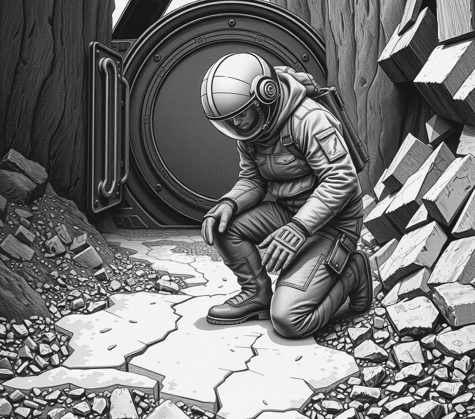

OLYMPUS GULLY . 10 May 4967

Bram Hallow retained his Jurisdictional Sprint title on Friday by etching a four-hundred-clause land easement into ground frost before his visor could clear.
The annual contest tests speed and accuracy in property law. Competitors must step from an airlock into the gully, mark a legal border, and register the deed before ice blinds their view. Most entrants managed three sentences. Hallow dropped to his knees at the mark and dragged legal script through frost with his thumb.
By second twenty, three rivals had tripped over rock drills while wiping their faceplates. By second forty, Hallow was halfway through the water rights clause. Judges watching through heat monitors noted his writing remained readable down to the margins required for trench access. He finished with three seconds remaining.
A late challenge from the regional land board failed after surveyors confirmed the frost deed remained valid until the afternoon thaw. By then, the boundary had already entered the planetary register.
"The air was warm," Hallow said in the mixed zone, scraping ice from his chin. "People waste time trying to see what they write. A good property lawyer can scratch out a late-fee penalty using elbow memory alone."
His victory secures water access to eight kilometres of dry ditch until tomorrow, when council heat lamps melt the official record and the trench reverts to whoever can run fastest.